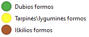
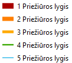
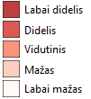
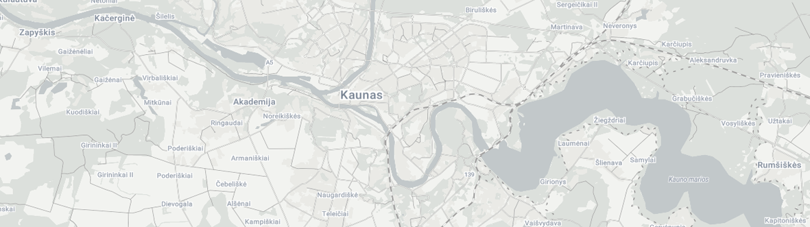
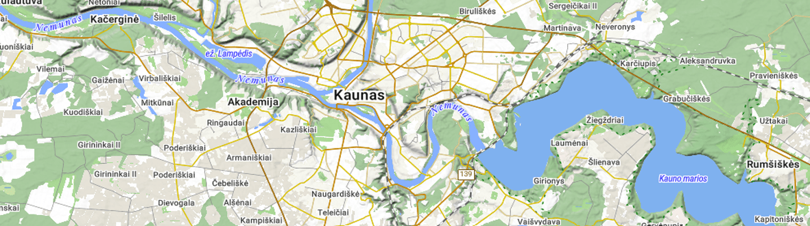
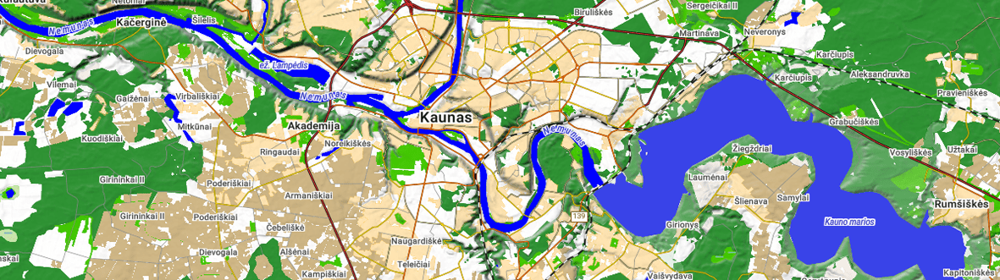

Sluoksniai
keyboard_double_arrow_right
Žemėlapių peržiūros aplikacija
Nuorodos
Svetainė
Kodas GitHUB
Geoportal duomenys
Pasirinkite sluoksnius:
Teminiai žemėlapiai
Reljefo formų vietovardžiai

Kelių priežiūros prioritetai

Žūvančių medžių tūris per metus

Foniniai žemėlapiai
Apžvalginis
arrow_downward

Topografinis
arrow_downward

Gamtinis
arrow_downward

Ploto matavimo rezultatai: